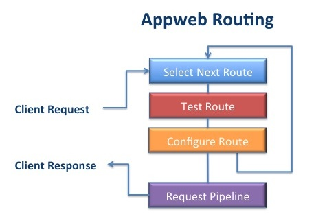
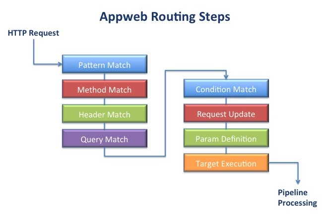

Request Routing
Appweb includes a powerful request routing engine that processes client HTTP requests. The engine is configured with a set of routes and, when a request is received, it tests various routes and selects the best one to handle the request. In the process, routes may redirect or rewrite the request as required.
An Appweb configuration will typically have many routes. The configured routes are tested in order by matching the route pattern against the request URI. A route may require that further preconditions be met before it is suitable to process the request. If the required conditions are not met, the next route in the configuration will be tested. There is always a catch-all route that will process the request if all prior routes fail to qualify.
A route may modify the request during processing by changing the request URI or request data. The route may also run commands as a side-effect during processing.
Route Configuration
Routes are defined in the appweb.conf configuration file or via an API and are processed at run-time when client HTTP requests are received.
The most fundamental directive is the Route Block directive which declares a new route block and defines the route matching pattern:
<Route /info/ > </Route>
This example defines a route pattern /info/ that will match request URIs that begin with "/info/". The route pattern is a regular expression pattern that is used to match against the client request URI. If the route pattern matches the URI, the route is selected to process the request.
Route Ordering
When multiple routes are defined in the configuration file, a client request will test each route in the order in which they are declared in the configuration file. So ordering is very important. Routes with longer or more qualified route criteria should be defined first before more general routes.
Route Nesting
Routes can be nested where route blocks are placed inside other route blocks. The inner route will inherit the configuration that existed at the point the open route block directive appears in the configuration file.
When a route block is defined, it is not added to the list of routes until the closing </Route> directive is encountered. This means that inner route blocks will be correctly defined before their outer route block. For example:
<Route /info/ >
Documents /public-docs
<Route /info/private/ >
Documents /confidential-docs
AuthType digest
AuthName "Top-Secret"
Require valid-user
</Route>
</Route>
This example assigns different physical directories for public and private information and secures the private information with digest authentication. The inner /info/private route will be defined before the /info route and will be matched against the request URI before the /info route.
Default Route and Virtual Hosts
A hidden route is defined at the very top of the appweb.conf configuration file. This is the default route and all routes ultimately inherit from it. Route related directives outside a route block will configure and modify the default route.
VirtualHost directives also define implicit route blocks. In this way, they inherit the route configuration that existed at the point in the configuration file where the VirtualHost is defined, but they can override this to create a unique route configuration for the virtual host.
Route Directives
Other route related configuration directives include:
AddHandler and SetHandler
The AddHandler directive defines an Appweb handler for the route which will be used when the request extension matches one of the AddHandler extension arguments. The SetHandler directive defines the Appweb handler to be used for the route regardless of the URI extension.
Condition
The condition directive can define a condition test that must be true for the route to be selected. Conditions have three test rules: exists, directory and match. The exists rule evaluates if the condition filename argument exists in the file system. The directory rule evaluates if the filename is a directory. The match rule tests the string argument against a regular expression pattern. A route may have any number of condition directives.
Documents
The directory containing documents can be defined via the Documents directive. If the client is requesting a physical document, the request URI is appended to the Documents directory to locate the file to serve.
Header
Header directives can define a required header and value that must be present for the route to be selected. The header value can also be negated by prefixing the name with "!". This negating also works for the Condition directive. A route may have any number of header directives.
LogRoutes
The LogRoute directive will display the route table to the error log.
Methods
A route can define the set of valid HTTP methods via the Methods directive. The standard HTTP methods are: DELETE, GET, OPTIONS, POST, PUT and TRACE. The Methods directive can also take an argument of "ALL" or "*" to select all possible methods for the route.
Prefix
The prefix directive removes a prefix string from the request URI. This is often used to remove an initial application name from the URI.
Reset
If a route needs a completely clean configuration, the Reset routes directive can be used to remove all inherited configuration.
RouteName
Routes may be given a symbolic name that is used when displaying routes in the log file via the LogRoutes directive. The symbolic name is also used by some APIs to look up routes by name.
Target
The target directive specifies what action the route will take to respond to the request. The target directive has four rules: close, redirect, run, and write. The close rule is used to immediately close a connection without responding to the client. This can be used to mitigate denial of service attacks. The redirect rule is used to redirect the request to another URI. The run rule is used to run the select handler to respond to the request. The write rule is used to respond to the client with literal text and is useful for debug responses.
Update
The update directive modifies the request or environment. Updates have two rules: param and cmd. The param rule can be used to set the request params to a specific value. The cmd rule can be used to run external commands.
Request Params
Request parameters are comprised of a set of request state information. This includes:
- Query field values
- Posted form fields
- Tokenized route pattern fields
- Fields explicitly set via the Update directive
Different web frameworks expose request parameters in different ways. CGI provides access to request parameters via environment variables. In PHP, they are mapped to PHP server variables. In ESP they are accessed via the espGetParam API.
Tokens
Target, Condition and Update directives can reference tokenized values that are expanded when evaluated at run-time. There are three classes of tokens:
- System/Route variables — DOCUMENTS, LIBDIR, PRODUCT, OS, ROUTE_HOME, VERSION.
- Route URI tokens — these are the braced tokens in the route pattern.
- Request tokens — these are request state and property values.
- SSL tokens — these are the SSL connection state.
System and URI Tokens
System and URI tokens are of the form: "${token}" where "token" is the name of the variable or URI token to substitute.
Request Tokens
Request tokens are of the form: "${family:name=defaultValue}" where the family defines a set of values. If the named tokens are not present, an optional default value "=defaultValue" will be used instead. These supported request token families are:
- header — for request HTTP header values
- form — for request form values
- request — for request details
- ssl — for SSL state details
Request Family Tokens
The supported request key names are:
- clientAddress — the client IP address
- clientPort — the client port number
- error — any request or connection error message
- ext — the request extension
- extraPath — the request extra path after the script extension
- filename — the mapped request filename in physical storage
- language — the selected language for the request
- languageRoot — the langauge root directory
- host — the host name owning the route for the request
- method — the request HTTP method
- originalUri — the original, pre-decoded URI
- pathInfo — the path portion of the URI after the host and port information
- prefix — the route prefix
- query — the request query string
- reference — the request reference fragment. This is the URI portion after "#"
- scheme — the request protocol scheme. E.g. "http"
- scriptName — the request script or application name
- serverAddress — the server IP address
- serverPort — the server port number
- uri — the full request URI. May be modified by routes, handlers and filters
SSL Family Tokens
The supported ssl key names are listed below:
| Key | Example Value | Description |
|---|---|---|
| state | CIPHER=TLS_DHE_RSA_WITH_AES_256_CBC_SHA, CIPHER_IANA=39, CLIENT_VERSION=3,... | All the keys values below and the certificate values in single KEY=VALUE, ... string |
| CIPHER | TLS_DHE_RSA_WITH_AES_256_CBC_SHA | Encryption cipher suite |
| CIPHER_IANA | 0x39 | IANA cipher code |
SSL Certificate Key Tokens
The keys below pertain to the client or server side certificate and are prefixed with either "CLIENT_" or "SERVER_".
| Key | Example Value | Description |
|---|---|---|
| VERSION | 3 | Certificate version |
| SERIAL | 00:89:89:4C:64:02:32:E9:8A | Certificate serial number |
| S_C | US | Subject country |
| S_ST | Washington | Subject state |
| S_L | Seattle | Subject locality |
| S_O | Example Inc. | Subject organization |
| S_OU | Development | Subject organizational unit |
| S_CN | localhost | Subject common name |
| S_EMAIL | dev@example.com | Subject email address |
| I_C | US | Issuer country |
| I_ST | Washington | Issuer state |
| I_L | Seattle | Issuer locality |
| I_O | Example Inc. | Issuer organization |
| I_OU | Development | Issuer organizational unit |
| I_CN | localhost | Issuer common name |
| I_EMAIL | dev@example.com | Issuer email |
| START | 2012-06-25 12:51:01 | Certificate valid 'not before' date |
| END | 2014-06-25 12:51:01 | Certificate valid 'not after' date |
| CIPHER | RSA_SHA1 | Certificate encoding cipher |
Example
For example, to select the client's browser string passed in the HTTP headers:
Target run ${header:User-Agent}
To select a form field value, consider if the URI /info/Mary matched the pattern: ^/info/{name}. Then the ${name} token could be used in a Target run rule as such:
run ${name}.html
Route Processing
To process a request, The Appweb route engine examines each of the configured routes to determine the best matching route for a request. It does this by considering each route in the order it is defined in the configuration file. Each route is tested over a sequence of steps. Not all steps are required. However, the selected route will always perform pattern match, param definition and target execution. If a route fails to match at a step, the route is discarded and the next configured route is considered.
Routing Steps
- Pattern Matching — Test if the request URI matches route pattern.
- Optional Method Matching — Test if the request method is valid.
- Optional Header Matching — Test if the request has the require headers.
- Optional Form Field Matching — Test if form data has required values.
- Optional Condition Matching — Test if the required conditions are true.
- Optional Updates — Modify the request with specified updates.
- Param Definition — Define tokens as request params.
- Target Execution — Select the Appweb handler and determine the target resource.
Route Matching
Appweb will select the appropriate route to service a request routing once the request URI and HTTP headers have been received from the client. If a request has form data, it is worthwhile to delay routing until after the form data has been read from the client. This enables the routing directives to take action based on the received form data. If a request has no form data, it is routed immediately after the HTTP headers have been read and parsed.
A request with form data has a Content-Type header of application/x-www-form-urlencoded. Requests with a Content-Type set to multipart/form-data which indicates form based file upload, will also delay routing until the uploaded file has been fully received.
Pattern Matching
A route pattern is a specially prepared regular expression that can be quickly matched against the request URI. The route pattern may match the entire request URI, just a subset at the start of the URI or any portion in between. Regular expressions are ideal for route patterns as they can express a wide variety of URI formats and can also extract sub-expressions for later evaluation.
URI Tokens
Often the request URI will not only provide a path to a resource, but it will contain tokens of information that must be isolated and extracted from the URI. Appweb route patterns provide an easy and efficient means to extract such tokens and define them as request params. To do this, Appweb route patterns extend the standard regular expression syntax via embedded tokens.
A token is a portion of the URI that is enclosed in braces "{token}". The token name is a symbolic name that will be used later to define a request parameter. In the request URI, any sequence of characters except "/" are acceptable in the token name. For example the route pattern:
<Route ^/{controller}/{action}$>
will match the URI:
/user/login
After pattern matching, the request param controller will be set to "user" and action will be set to "login".
Token values can be accessed in condition, update and target directives via the ${token} syntax.
To enable the extension token syntax, the standard regular expression syntax for repeat sub-expressions that uses braces: {m,n} needs to be back-quoted. i.e. \{m,n}.
Sub-Expressions
In addition to route tokens, standard regular expression sub-patterns can be defined by wrapping a sub-expression in parentheses. For example:
<Route /(user|admin)/{cmd}>
This will allow URIs that begin with either /user or /admin. Sub-expression and token values are made available to Conditions, Updates and Targets by using $N in the directive details. The first sub-expression or token is assigned to $1, the second to $2 and so on. If a request with the URI /user/login was received, the route above would set $1 to "user" and $2 to "login".
Conditional Sub-Expressions
Conditional sub-expressions can be defined by wrapping in "(~" and "~)". This means the wrapped sub-expression is valid but not required. For example:
<Route /{controller}(~/{action}~) >
will match any of the URIs:
/user /user/ /user/login
Anchoring Route Patterns
It is wise to anchor route patterns to the start of the URI. This is done by using the "^" character at the start of the URI. If the pattern describes the full request URI, the pattern can anchor to the end of the URI by appending "$". For example:
^/{controller}(~/{action}~)$
Method Matching
Method matching is an optional step. Routes can be configured to only match certain HTTP methods. Method matching tests the supported route methods against the actual request HTTP method. By default a route supports all methods
Header Matching
Header matching is an optional step. Routes can be configured to require that the request has HTTP headers with or without defined values. For example: a route may wish to only be relevant for a particular browser:
<Route /info/ >
RequestHeader User-Agent /Chrome/
</Route>
Form Value Matching
Form value matching is an optional step. Routes can be configured to require that the request has form data with or without defined values. Form data is sourced from the request URI query string and from form body (POST) data. Form data must have a Content-Type of "application/x-www-form-urlencoded" — normal HTML forms are encoded this way.
<Route ^/info/ >
Param name /(Mary)|(John)/
</Route>
This route will match the URIs:
/info/file.html?name=Mary /info/file.html?name=John
Condition Matching
Condition matching is an optional step where extra conditions can be tested before the route is selected. Conditions can test if a file exists or not and whether a file is a directory or not. Condition rules can also test any request parameter against a regular expression.
Request Update
Request update matching is an optional step where the request params can be modified.
Param Definition
After a route fully qualifies, request params are created for route pattern tokens. This provides an easy mechanism for extracting useful information from the request URI and passing it to the web page or controller for processing.
Target Execution
Route targets have responsibility to generate the actual response to the client. But, before the target can be executed, the appropriate request handler must be selected. If a route has an explicit handler defined via SetHandler then that handler will be used. If a set of handlers have been defined via AddHandler directives, then the handler defined with the corresponding URI extension will be selected.
The target has four possible rules: close, redirect, run and write. Of these, all except for the close rule take parameters that are expanded using the matching sub-expressions and/or route tokens derived when matching the route pattern.
Target rule parameters can use "${token}" to be replaced with the value of the token. Target rule parameters can also use "$N" to be replaced with the Nth matching sub-expression, "$&" to be replaced with the entire matched pattern, "$`" to be replaced with the portion that precedes the matched pattern and "$'" to be replaced with the portion that follows the matched pattern. For example:
Target write 200 "Running controller ${controller} action ${action}\n\n"
This will write the message back to the client with a HTML status code of 200. See the httpSetRouteTarget API for full details regarding possible tokens.
Note: to be more secure, the write rule will escape embedded HTML sequences. If you need to emit HTML, use the -r switch for raw write output.
Prefix Removal
If Appweb is running several applications, it will need to be able to route and distinguish requests for each application. There are two primary ways to achieve this: run each application in a separate virtual host or uniquely prefix the URIs for each application. If using the latter approach, routes can be defined for each application that specify the URI prefix for each application. However, it is often convenient to have the application prefix removed from the URI once the route is selected. The Prefix directive defines a URI prefix that will be stripped from the start of the request URI once the route is selected. If the route defines a header, form or condition that is not satisfied, the prefix is restored to let other routes see the full URI.
Route Examples
Redirecting Old URIs
To redirect requests for old documents to newer versions:
<Route ^/public/oldFile.html$>
Target redirect 302 /public/newFile.html
</Route>
Authenticating Private Content
To secure private content :
<Route /private/ >
Documents /private-docs
AuthType digest
AuthName "Top-Secret"
Require valid-user
</Route>
Serving Compressed Content
This example enables the serving of compressed content where an equivalent compressed document exists. i.e. A request for /manual/overview.html may return /manual/overview.html.gz if it exists. If there is no compressed content, the uncompressed version is returned.
<Route ^/manual/ >
Compress gzip
</Route>
Multi-Language Content
This example stores English content under the "english-docs" directory and French under the "french-docs" directory. The client's browser should include an Accept-Language header which stipulates which language is preferred. If the accept header is missing or the requested language is not English or French, then the DefaultLanguage directive indicates that english content should be returned.
<Route / >
DefaultLanguage en
AddLanguageDir en /path/to/english-docs
AddLanguageDir fr /path/to/french-docs
</Route>
Multi-Language by Suffix
This example stores content for all languages together and includes a language suffix to the request document filename. If the client requested a French version of home.html, then the document home.fr.html would be served.
<Route / >
DefaultLanguage en
AddLanguageSuffix en en before
AddLanguageSuffix fr fr
</Route>
Application Isolation
To group routes for an application, enclose in a Route block and use a Prefix directive to remove the application prefix.
<Route /manage/ >
Prefix /manage
Documents manage-app
SetHandler espHandler
<Route /manage/{controller}/{action}>
Target run ${controller}-${action}
</Route>
</Route>
Denial of Service Protection
To immediately close a connection without responding use the Target close directive.
<Route /hacked-url/ >
target close
</Route>
Missing File
To match a missing document without redirection:
<Route / >
Condition ! exists ${request:filename}
Target run /missing.html
</Route>